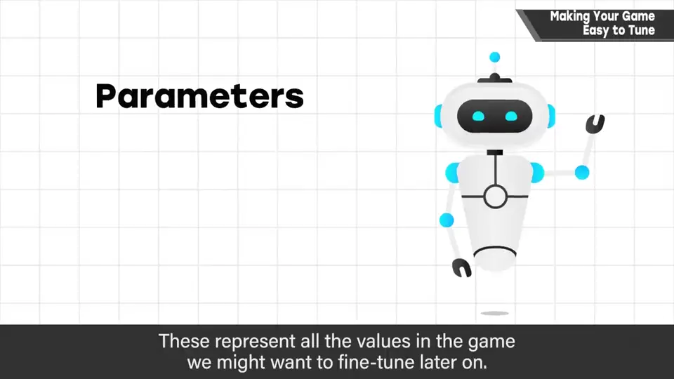
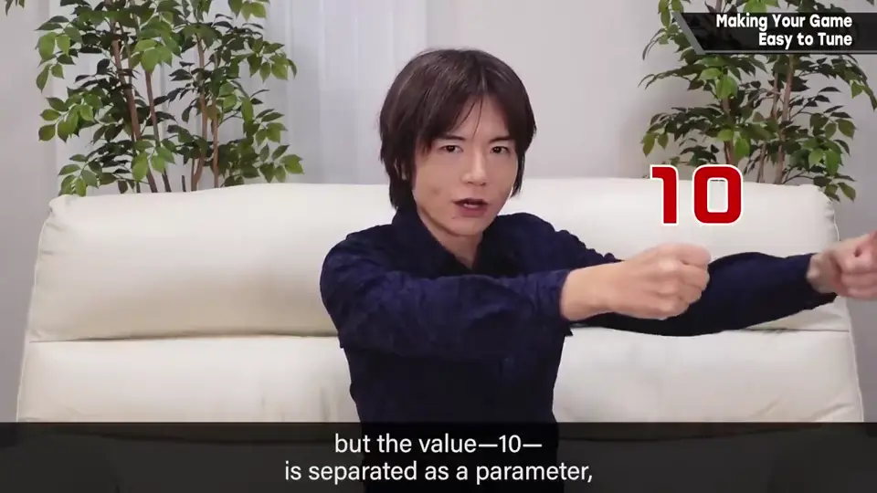
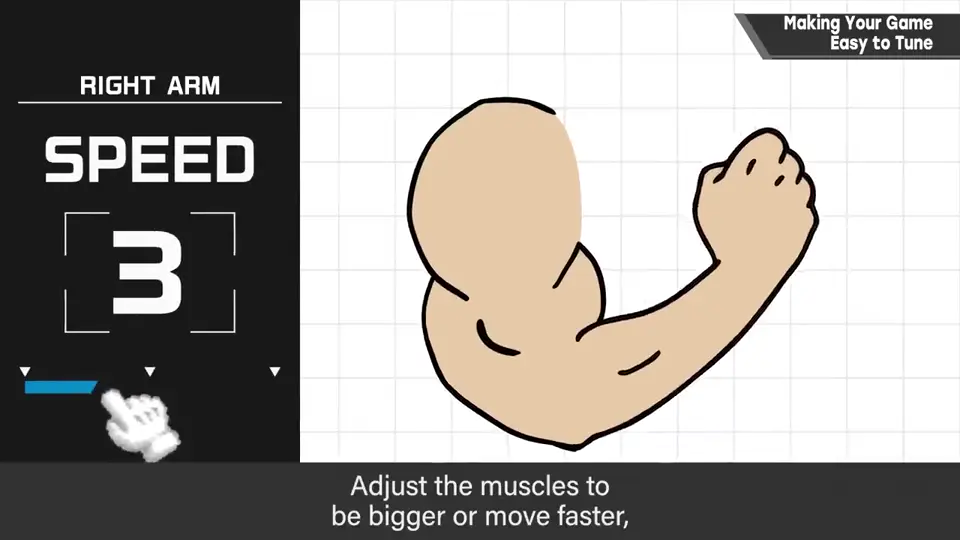
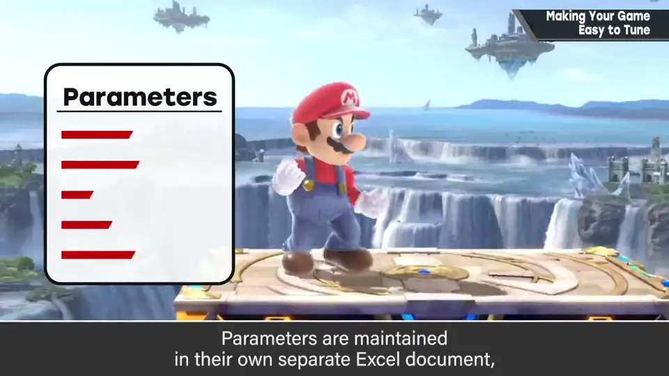
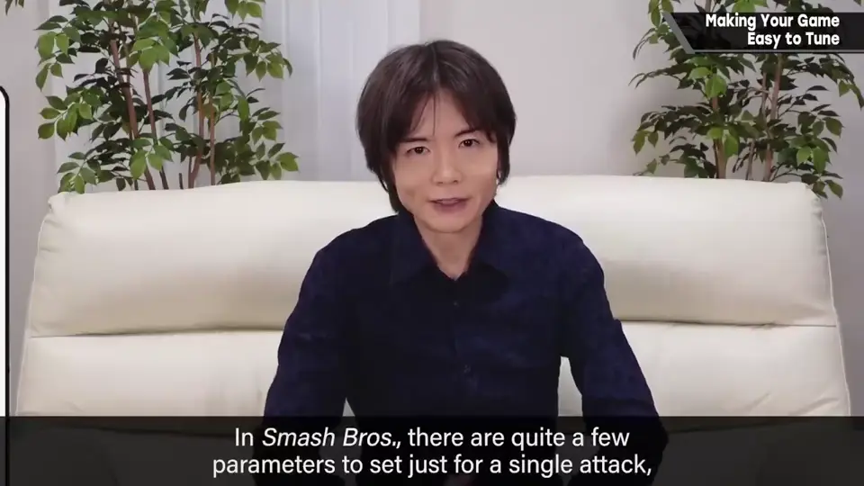
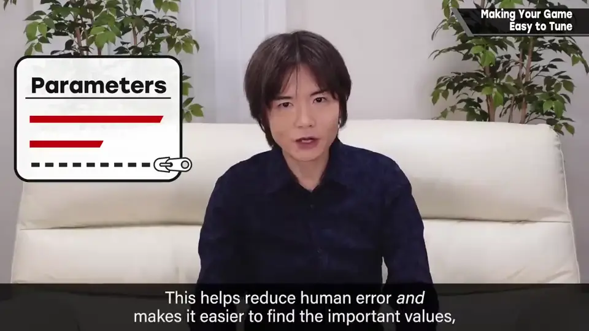
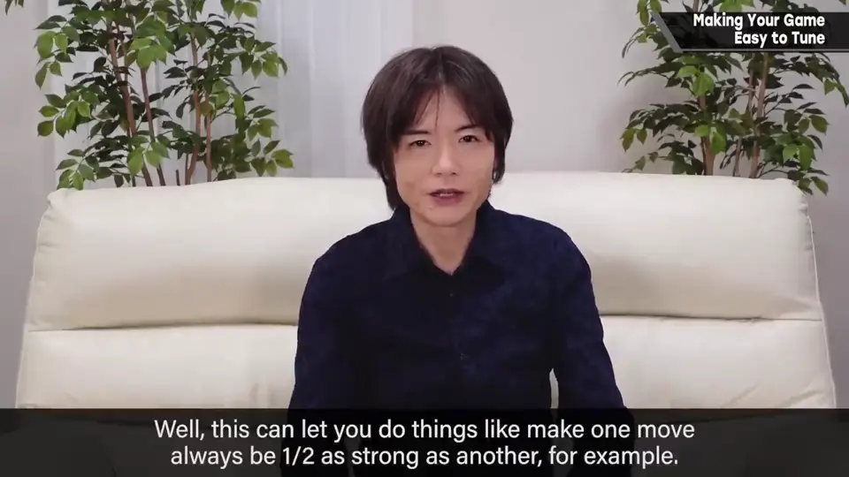
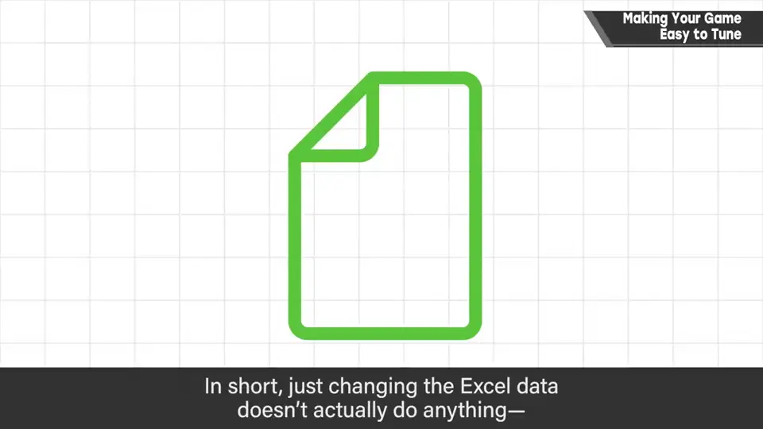
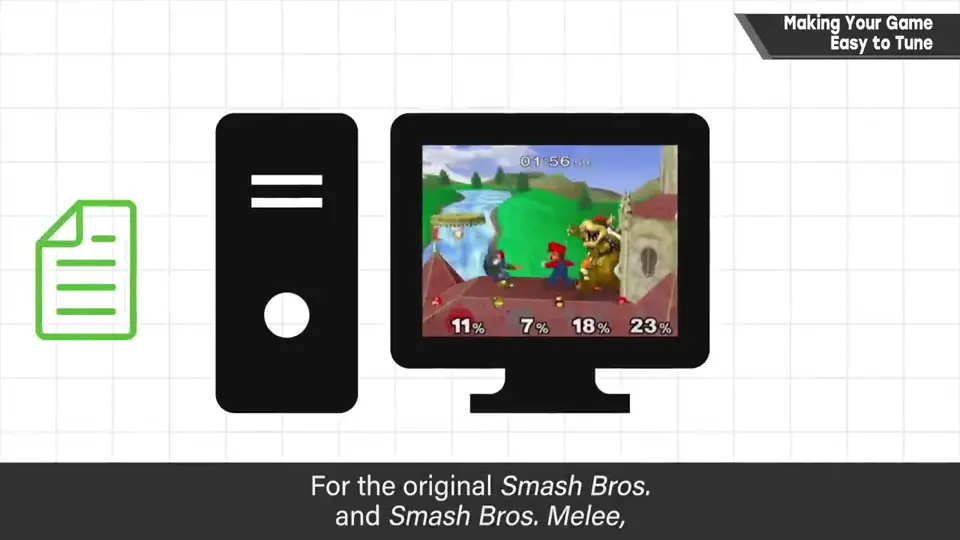
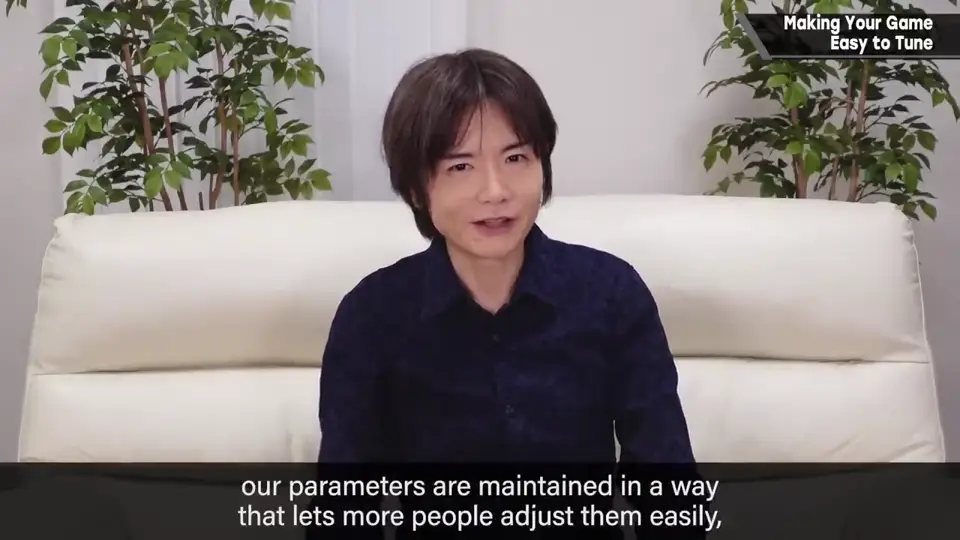

速览
大切的是游戏的调整。不熟悉做游戏的人，大概不清楚平衡调整是在什么环境下进行的；实际上是企业机密，只在能说的范围内稍微讲讲，也不能展示实际开发环境画面，所以缺乏具体性请见谅。首先，请程序员写程序时，会让程序引用一组叫参数的数值，几乎所有想调整的数值都放到外面。例如有个攻击力 10 的招式：出招是程序机制，但「10」这个数值本身作为参数放在外面，之后由策划调整。当然把攻击力 10 直接写进程序也能一样运行，但这样每次调整都得改程序，非常麻烦。程序是骨骼，参数是肌肉：把肌肉变大、动得更快，同样的东西性质也能大变——当然最后要调到刚好。参数整理在 Excel 上，稍微改改数值就能细致设定。《大乱斗》一个攻击可设定的参数很多，所以做成了可以隐藏低频调整参数的形式：为避免人为失误、也为让要点更易懂，隐藏平时不太用的数值很有效。用 Excel 也便于加入公式，更容易引用参数、做相对调整——例如设定某招总是另一招威力的 1/2。数值要反映到实机，需要叫「转换（conversion）」的作业（叫法各异）：只改 Excel 数据没用，要流入开发机测试。这做成了 Excel 插件，一键就把改过的参数设定到运行中的开发机，非常方便——能整备这种开发环境，是和万代南梦宫工作室合作特别好的地方之一。初代《大乱斗》和 DX 时代，一次转换要约 10 分钟，改一点就得重启游戏，也没有 Excel，是他用文本啪啪编辑；那时参数几乎全是他写的，也只能那样。现在（从《大乱斗 3DS/Wii U》起）参数整备好，更多人容易接触、容易试错，调整的广度和深度都扩大了。这里是试错最多的地方，希望各团队都有合理的机制。
1. 参数：放到程序外 0:03
不熟悉做游戏的人，大概不清楚平衡调整是在什么环境下进行的。实际上是企业机密，只在能说的范围内稍微讲讲；也不能展示实际开发环境画面，缺乏具体性请见谅。
首先，请程序员写程序时，会让程序引用一组叫参数的数值。几乎所有想调整的数值都被放在外面。


例如有个攻击力 10 的招式：出招是程序的机制，但「10」这个数值本身作为参数放在外面，之后由策划调整。
当然把攻击力 10 直接写进程序也能一样运行，但这样每次调整都得改程序，非常麻烦。
2. 程序是骨骼，参数是肌肉 1:15


3. 用 Excel 管理 1:26
参数整理在 Excel 上，稍微改改数值就能细致设定。


《大乱斗》一个攻击可设定的参数很多，所以做成了可以隐藏低频调整参数的形式。为避免人为失误、也为让要点更易懂，隐藏平时不太用的数值很有效。
用 Excel 也便于加入公式：更容易引用别的参数、做相对调整。例如可以设定「某招总是另一招威力的 1/2」。

4. 一键转换 2:20
数值要反映到实机，需要叫「转换」的作业（叫法各异）：只改 Excel 数据没用，要流入开发机测试。

5. 过去与现在 2:48
初代《大乱斗》和 DX 时代，一次转换要大约 10 分钟，改一点就得重启游戏；也没有用 Excel，是他用文本啪啪地编辑。那时参数几乎全都是他写的——也只能那样。


现在（从《大乱斗 3DS/Wii U》起）参数整备完善，更多人容易接触，容易试错，调整的广度和深度都扩大了。
自测题
1. 为什么要把参数放在程序外面？
直接写进程序每次调整都要改程序；放在外面策划可以随时调整。 0:33
2. 用 Excel 管理参数有哪些好处？
可隐藏低频参数避免失误、可写公式做相对调整（如某招总是另一招的 1/2）。 1:26
3. 什么是「转换」？现在如何进行？
把参数反映到开发机的作业；现在用 Excel 插件一键送到运行中的开发机。 2:20